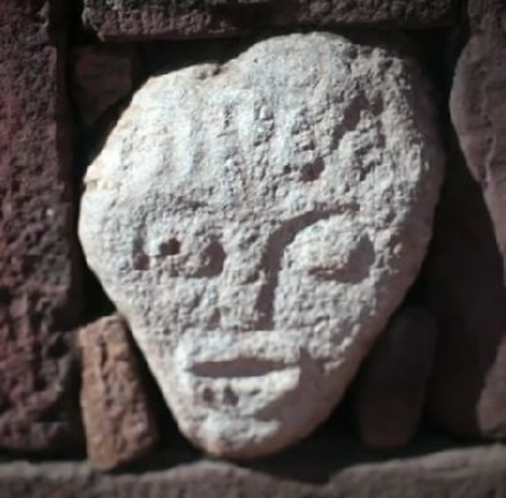

SIRENAS EN EL LAGO TITICACA
.jpg)
El Lago Titicaca, entre Bolivia y Perú, es hogar de la leyenda de las sirenas, seres míticos vinculados a avistamientos y hallazgos de restos no confirmados. Este misterio conecta a las comunidades locales con sus tradiciones y fascina a visitantes del lago.
EXTRATERRESTRES EN TIWANAKU

Tiwanaku, guarda el misterio de Puma Punku, un sitio con bloques gigantes de precisión asombrosa. Su construcción, atribuida a civilizaciones avanzadas o incluso extraterrestres, sigue desafiando explicaciones científicas, mientras investigaciones recientes en la composición de sus piedras generan más preguntas que respuestas.
ATLÁNTIDA PERDIDA EN PAMPA AULLAGAS

Pampa Aullagas, en Oruro, ha sido asociada a la Atlántida por el cartógrafo Jim Allen, basándose en las descripciones de Platón. Allen señala que su geografía, con planicies, montañas y canales circulares, coincide con la narración del filósofo sobre una civilización avanzada que desapareció hace 11.000 años.
SALAR DE UYUNI
.jpg)
El Salar de Uyuni, el mayor desierto de sal del mundo, combina paisajes únicos con misterios y leyendas. Entre sus enigmas destacan los patrones geométricos formados por la evaporación de la sal y la leyenda del volcán Tunupa, cuyo llanto originó la planicie salina.
MISTERIOS DE SAMAIPATA
.jpg)
El Fuerte de Samaipata, en Santa Cruz, es un sitio precolombino lleno de misterios, como la enigmática Chinkana. Este pozo en espiral, de 15 metros de profundidad según exploradores, inspira leyendas sobre serpientes guardianas, túneles secretos y tesoros ocultos.